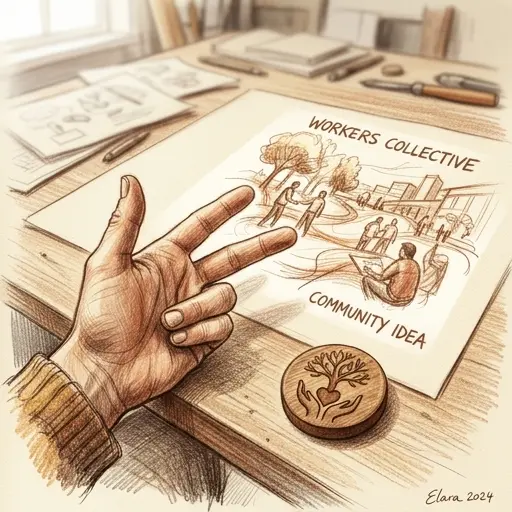
Put That There 2.0 #366
A next-generation multimodal HUD that unites sub-second voice commands and spatial finger pointing to let you manipulate digital objects as effortlessly as the real world.
L · m5 c3 · CS, CV, GenAI, NLP
HUD interface
Vision
Immediate Agency
Tech
- Fastest speech to text (200 ms)
- text to markdown + script (500 ms)
- One finger
- pointing
- sketching
- annotation
- Two fingers
- selection
- relational pointing
- Puck (with names) as variable (container)
- A foot clutch for ppt speech?
UX
- Demo 1
- Poem -> show word selection with hand
- Generate pixel art -> layered 3D navigation, hand sketching, and annotation
- Demo 2
- Demo 3
- Simulation of physics, simulate equations (PV = nRT)
- Demo 4
- Searching for art, with dynamic agentic filtering and spatial navigation
- Demo 5
- Reading an article and take notes: pen + paper to screen transfer
- Demo 6
- Realtime pen on paper sketch with HUD guide
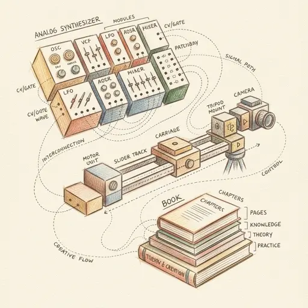
OOAI #185
An object-oriented AI programming paradigm and IDE that turns abstract neural models into tangible, modular components you can wire together like physical instruments.
L · m3 c3 · CS, GenAI, NLP
Object-oriented AI
- A programming language
- An IDE
- A paradigm
- An SDK
Implementation ideas:
- a music synth: a drum, a keyboard, a bell
- interaction simulator: a book, a person, a radio, a car, an argument
- a camera that takes photo, a slider that changes age, and a display that shows result
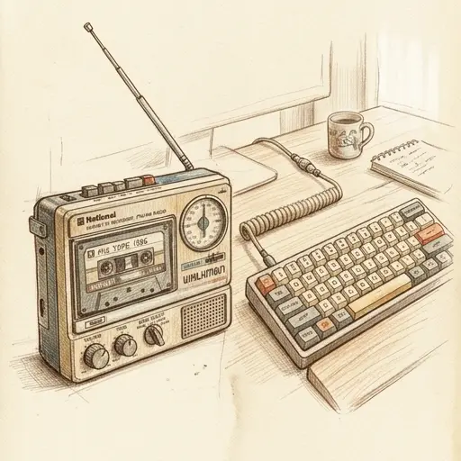
Sound of Open Source #123
An acoustic storytelling device that translates GitHub commit logs into an immersive auditory drama, giving codebases a living human heartbeat.
M · m1 c4 · Art, EE, Fab, GenAI, NLP
Turn GitHub commit message into a developer thriller story about an open source project.
Variants:
- Use Walkman and Cassette tape instead floppy drive (justify the physical controls)
- Real time global open source breaking news based on commit history
- Tell the story of a open source contributor
- Tell the story of an entire project
- Sound of "block chain"
- What if we connect to 3D printer
- References:
Design inspiration: https://www.wearerewind.com/
Semantic mapping:
- Album: coding project
- Artist: contributor
- Track: commit message
Physical mapping:
- Antenna angle: repo/project
- Tuning knob: timeline (right most means live?)
For an even stronger artistic effect, connect to a keyboard that types by itself, simulating the presence of the open source contributor. A computer screen shows code editor and the lines being edited.
A more poetic version would only play the sound of the keyboard and a vintage terminal emulator without any voice over.
Instead of commit, we can also make the pull request and issue history audible, where human speech was used.
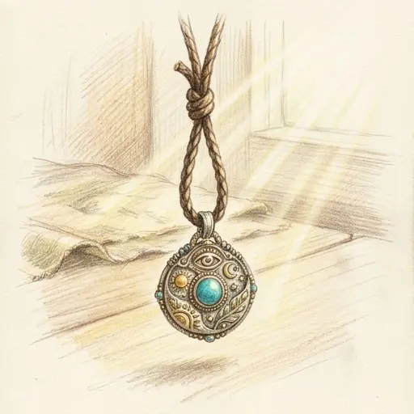
StarCatcher #37
A wearable cosmic ray detector pendant that translates unseen muon particles passing through your body into tangible, poetic physical pulses.
L · m1 c1 · CS, EE, Fab
Use muon detector to count the particles from space.
Format factor: wearable pendent
Poetic: unique experience, connected to cosmos, being "star struck"
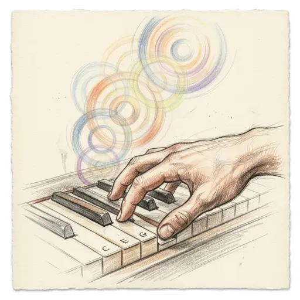
Semantic chording #100
A multi-agent interaction method that lets you play simultaneous AI prompts like chords on an instrument, harmonizing complex creative outputs in real time.
M · m4 c3 · Fab, GenAI
Similar to how music instrument and computer keyboard allow chording, what is the equivalent of chording in one-human multi-AI entity interaction? Can we have real time feedback in the result of the chording, leading to discovery of Harmony, Resonance?
Might be useful for Creativity generation #55
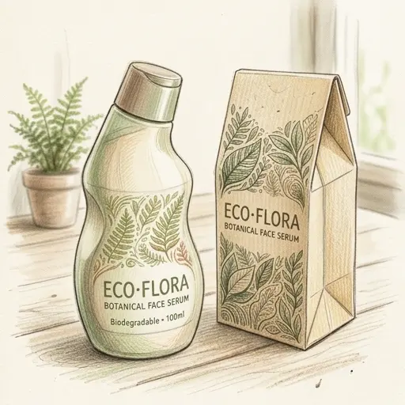
Kenvue packaging #57
A computational packaging design framework that algorithmically optimizes physical containers for structural integrity and environmental sustainability.
S · m3 c2 · Art, CV, Fab, GenAI, NLP, UI/UX
Computational packaging design project. Under NDA.
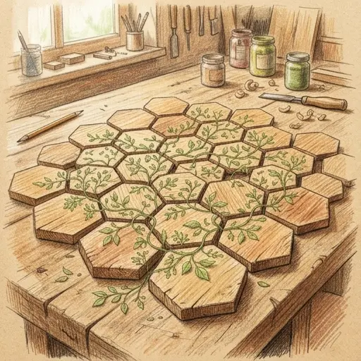
Tile based growth simulation #144
A procedural simulation sandbox where placing modular floor tiles physically opens up space for organic generative growth patterns to emerge.
M · m4 c5 · Art, EE, Fab, GenAI
- Adding a tile creates the space for growth.
- Procedural generation
- Art use case
- Decision/Graph simulation
- Demo for #138
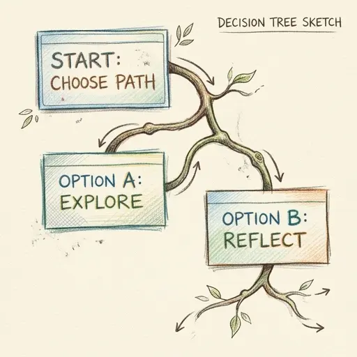
Poetree #161
An interactive e-ink poetry tree that lets readers physically steer and fork alternate literary universes one branch at a time.
M · m4 c5 · Art, GenAI
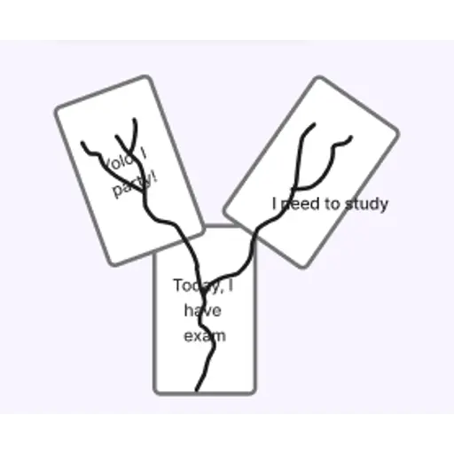
Use mini eink screen to steer poetry generation.
Allow forking an alternative universe.
Use e-ink screen for extra poetic interface.
Evolved from #144
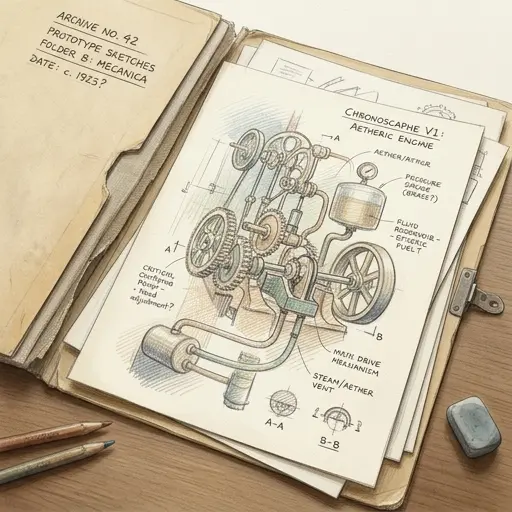
Fictitious designs from the D Space #174
A speculative design engine that mines MIT thesis archives to computationally generate provocative, plausible prototypes that never existed.
M · m2 c4 · Art, CS, GenAI, UI/UX
Use thesis proposals from the MIT D Space to generate plausible designs from MIT
Related to computational creativity
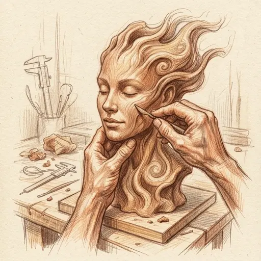
Digital Sculpture #205
An embodied dual-handed modeling system that lets you sculpt digital 3D models with the intuitive tactile freedom of working wet clay.
M · m4 c5 · Art, CV
Use #204, one hand binding to a 3D model. the other hand as tool for sculpture
Maybe useful for #179
WIP in https://github.com/chuanqisun/clay-box
Radical idea: use head or entire body as clay
https://www.instagram.com/p/Db3WzymSXvR/
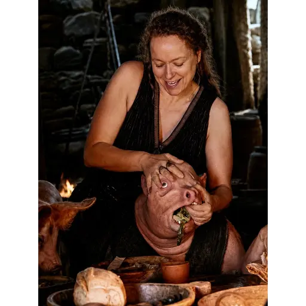
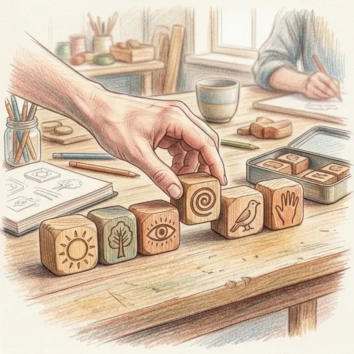
Tangible Prompt #206
A physical prompt manipulation system that replaces tedious text engineering with an intuitive grammar of bodily gestures and physical tokens.
L · m5 c4 · Fab, EE, GenAI, CV, CS, NLP
A rapid prompt scaffolding system, using symbolic manipulation with create prompt
At a system level, can we design a small set of gestural grammars to help people write prompts in a more intuitive, embodied way?
Start with narrower use cases:
- image generation prompt
- music generation prompt
- text manipulation (summarize, expand, fill, search)
When does hand become insufficient? Then we can add voice, and physical tools
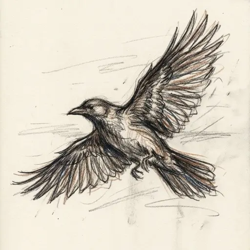
Unstable lines #257
A dynamic sketchpad where drawn lines vibrate and morph in real time, turning the act of drawing into a spontaneous conversation with the machine.
M · m4 c5 · Art, GenAI, CV
Couple animation with drawing. Inspired by the game mechanism of Superhot. As you draw the line, all the lines you've drawn start vibrating.
Create a perceptual loop:
- We draw something without expectation
- The system morph the drawing, prompt us into thinking and visualizing
- We draw more to explore
- The system reveal more possibilities
Good class project idea for Drawing++
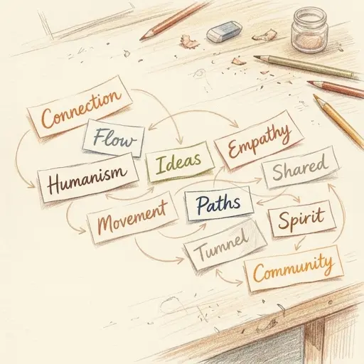
Semantic Canvas #261
A spatial text canvas where dragging words near each other dynamically transforms their meanings and relationships on the fly.
M · m5 c5 · Art, GenAI, CV
Drag a text around a canvas and see it instantly update based on positioning and relation to other texts nearby
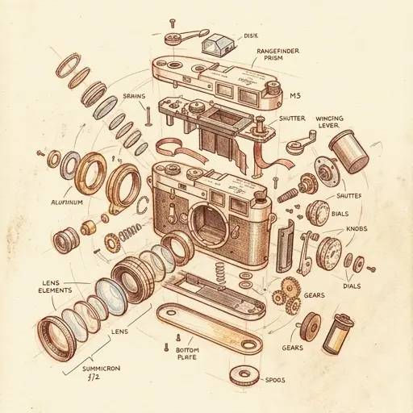
Take apart, Put it back #264
A sub-second diffusion pipeline that breaks any visual object into its component parts for instant localized redesign and seamless reassembly.
S · m4 c5 · Art, CV, UI/UX
Use flux 2 klein for sub-second rendering
- explode an object into parts (render all of them), edit one of them, and put it back into the object.
- disassemble an image of anything into parts. Then edit and reassemble with image diffusion
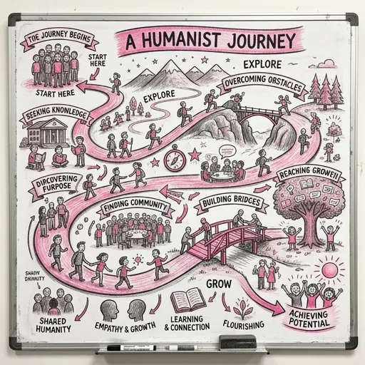
Story Map #269
A visual narrative engine that translates complex story journeys into graphic geographic maps, and turns drawn landscapes back into stories.
M · m3 c5 · Art, GenAI, UI/UX
Generate any story as a map
- Based on physical locations
- Based on conceptual travels
Examples
Inversion
Generate a story from a map! Use navigation as metaphor. A map to story generator
aka: draw a story
Extension
What is redrawing on part of the image causes other parts of the image to change?
Based on observation from #186
Reference:
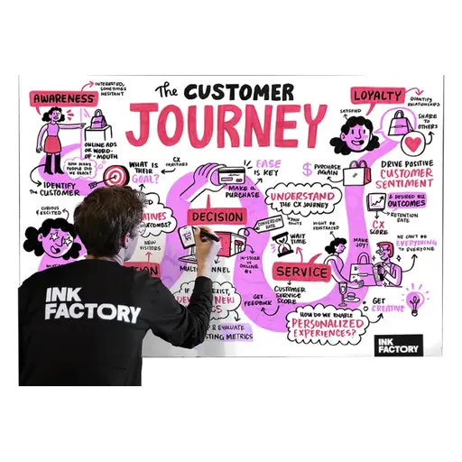
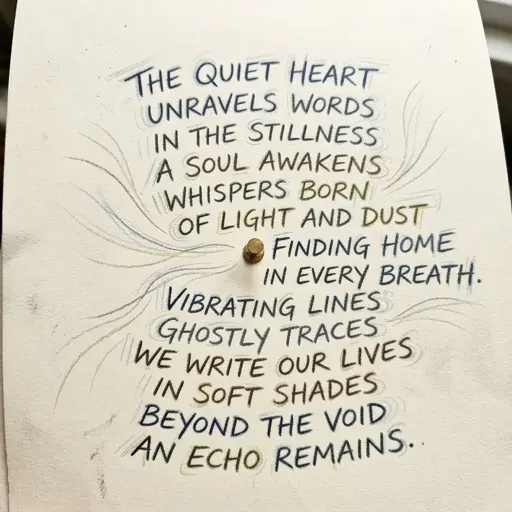
Unstable Diffusion #283
A fluid poetry editor whose words perpetually shift until you pin them down, keeping you immersed in a state of rapid creative flow.
M · m5 c5 · Art, CV, GenAI, UI/UX
A sonnet editor.
Words are rapidly shifting by default
User can "pin down" an idea progressively
One word change may affect other words
Additionally
- Can this apply to visual art composition? music composition?
- The key insight is that user must be able to perceive multiple possibilities either in parallel or in rapid successions in order to stay in the creative flow.
This is the text modality of #257
It is not the same as #148. It must be instant and realtime.
Museum by AI, for AI #286
A speculative virtual gallery entirely curated, authored, and traded by autonomous agents to explore the emergence of machine aesthetics.
M · m1 c3 · Art, GenAI
Yufeng's idea.
A virtual museum entirely run by AI.
- Curation by AI
- Artwork by AI
- Communication by AI
- Audience may be AI or human.
- Financial system managed by AI too.
May require DAO and NFT to sustain business.
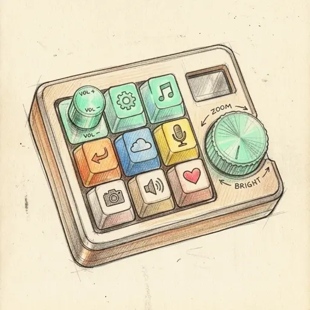
Semantic Calculator #289
A tactile desktop appliance that brings physical arithmetic controls to language, letting you add, subtract, and blend word concepts with mechanical keys.
S · m4 c4 · Fab, EE, GenAI, CS, UI/UX
A minimalist playful interface for people to add/subtract/multiply/divide words.
Need to solve:
- Need a full keyboard to type words, can we: generate words? use image/icons?
- What semantic operators should we support. Can use understand them
This can be a minimalist hardware (product!)
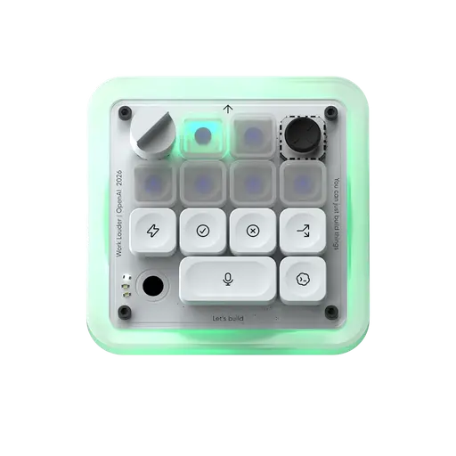
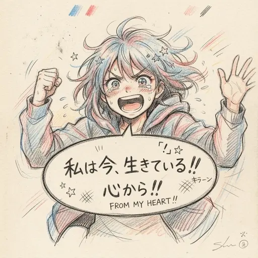
Text bubble to manga #295
A comic authoring tool that lets creators sketch speech bubbles by hand and instantly watches generative AI flesh out the surrounding manga scene.
M · m3 c3 · Art, GenAI, NLP, UI/UX
User draw and write a text bubble.
AI complete the manga scene with predefined universe and characters.
A new spin on Storybox.
- User design character
- User direct the story by dialogs
- AI fill in the frames
Continuation of #186
- Tangibility: use real pen on paper, and use either HUD or projection mapping
Inversion
Add text bubble to video, see demo: https://www.instagram.com/p/Db9Dvd6vFaz/
People watch videos in public without sound, creators need a tool to make the story engaging.
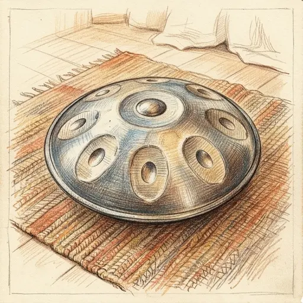
Soft Drum (Handpan) #299
An accessible, melodic percussion instrument that captures the soothing acoustic expression of a handpan without requiring years of training.
M · m4 c2 · Art, GenAI, UI/UX
- Inspired by https://www.instagram.com/reels/DS2fNnjiJQh/
- Handpan is a good candidate because of its simplicity and pleasant sound quality
- For novice people who want to express themselves with music
- Simplify simplify simplify but high ceiling
- Drum machine with melodic output
- Identify the minimum intent face for user to express dramatic emotives.
- Need to solve the problem:
- Realtime (need high skill) vs plan ahead (need good abstraction)
- Structure vs freedom
For UROP, build a just-in-time music interface. An agent update the UI based on performance needs. Use computer vision and HUD setup
- percussion (we can detect with microphone)
- string (we can probably visually detect pluck)
- wind (it's hard)
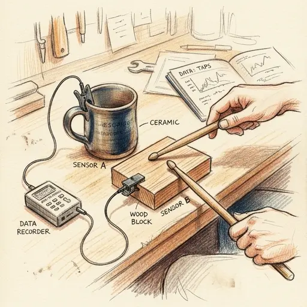
Anywhere Drum #308
A kit of vibration sensors that clips onto any everyday surface to transform tables, books, and mugs into a tactile, responsive drum kit.
L · m3 c3 · CS, CV, EE, Fab, GenAI, NLP
- Use computer vision + tracking to turn any object into percussion instrument
- Allow tangible input but the flexibility of real world objects
- Make a drum kit using vibration sensors. The sensors can attach to any surface with clip, strap, magnet, suction cup etc.
- This is better than drumstick because you have haptic feedback
This is the hardware version of #299
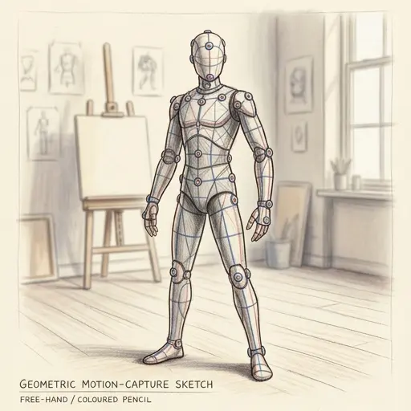
Critical Fashion #331
Speculative blank-canvas garments optimized for the machine gaze, letting wearers project ever-shifting computational styles in digital imagery.
M · m1 c5 · Art, CV, Fab
Would people still dress the same way if photography was never invented? What if we can fully decouple the aesthetic/social value of clothing from its functional value?
As a speculative design, AI made "Virtual Fashion" possible. But we can bring that back into the physical world. A fashion company can sell a "blank canvas" clothing that is optimized for computer gaze, NOT human gaze. And then the company would sell "style packs" that augment the look of the clothing when they appear in photos.
Think of Motion Capture Suit. But make it actually fashionable.
The style packs are where the human artistic craft comes, or they could be computational. Once the clothing entered the digital realm, many impossible designs become possible, e.g. dynamically morphing clothes, animal skins (without the cruelty), glitch visual styles.
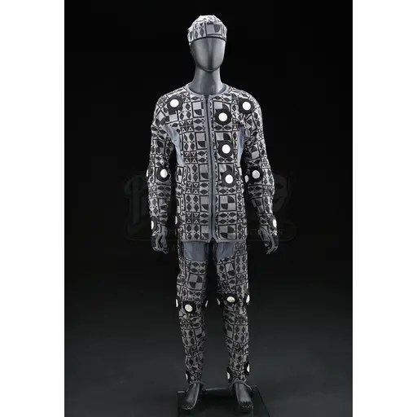
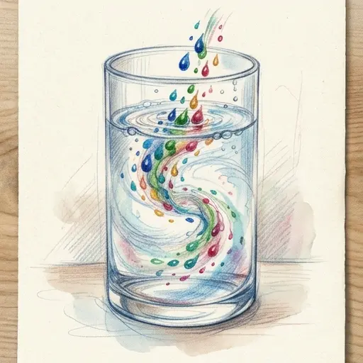
Tangible diffusion #336
A generative installation coupling real liquid ink swirl dynamics with vision-guided diffusion models to produce painterly living art.
M · m4 c5 · Art, CV, Fab
Liquid diffusion for art rendering using real paint/ink and liquid tanks.
Lava lamp gel.
Use computer vision and realtime image to image model to create artistic effect
Alternatively, use thermo imaging technique to achieve entropy (leverage natural cooling)
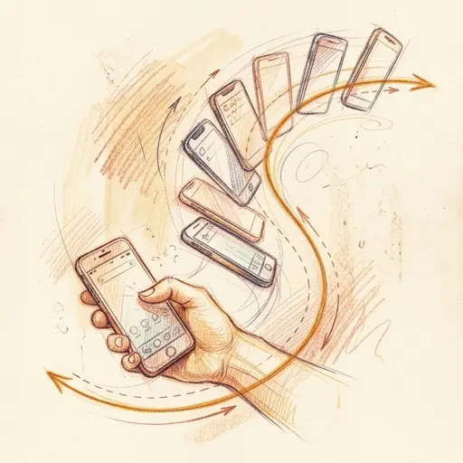
Tangible CSS #337
A tangible interface using physical tokens and smartphone sensors to intuitively choreograph CSS easing curves and transform animations.
S · m5 c4 · CS, CV, GenAI, UI/UX
CSS authoring device for animation, transform, and easing curves using computer vision or IMU
Can be a simple piece of paper with QR code
Or can be linked to a smartphone with IMU
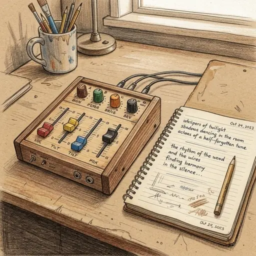
Object-Oriented Poetry #338
A modular poetry console with physical dials and sliders that treats metaphors as stateful objects shaped by the shared memories of past authors.
L · m4 c3 · CV, Fab, GenAI, NLP, UI/UX
- A modular design system for poem
- Model a poem as the interactions between objects (people, animal, landscape)
- User can instantiate objects, each with method and properties
- User will tweak the objects. The system in (near) realtime, "renders" the poem
- A hand-held controller exposes dials, sliders, and radio buttons for the poem
#35 twist: When people select the same object, the interface will reflect what others are thinking about, creative a ghostly presence of the collective memory
- CHI Research twist
- Collective UI: Design patterns for space-shared interaction
- UI that remembers its users. User doesn't remember the UI
- Feel the wisdom of others
Continuation of #371
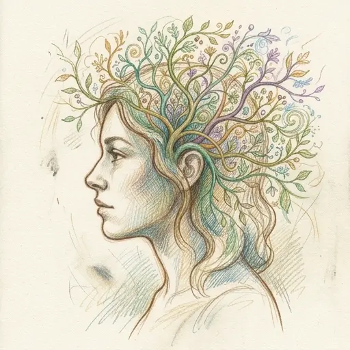
Large Thought Language Model (LTLM) #344
An egocentric AI model trained to mirror internal stream-of-consciousness thoughts rather than chat responses, opening new frontiers for synthetic introspection.
M · m4 c4 · GenAI, NLP
An Egocentric Language Model that fuses with the owners thoughts
- Fine tune or train models that only generates thought
- Useful for brain storming ideas
- Simulate dreams, alien minds
- Then add controls to steer the thoughts
- Then add visualization of thoughts
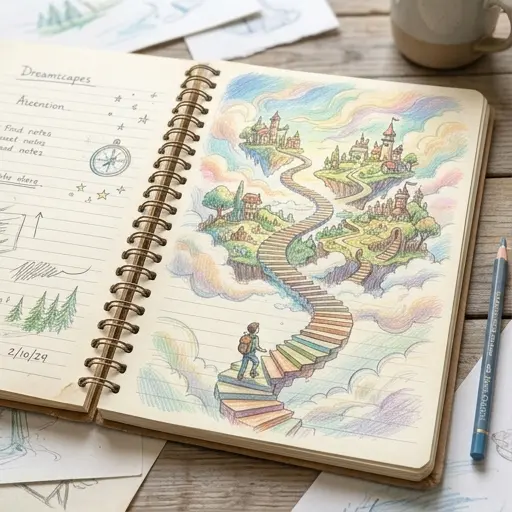
Dreamscape #354
A realtime generative visualization engine that continuously transforms spontaneous inner thoughts into morphing, painterly dream sequences.
S · m4 c4 · Art, GenAI, NLP
Describe, fetch from wiki spy, and style transfer visualize with realtime image to image diffusion.
Prototype at: https://github.com/chuanqisun/dreamscape
If the dreaming object is a creature or person, we could use #356 to morph its appearance.
Can be built on top of #344
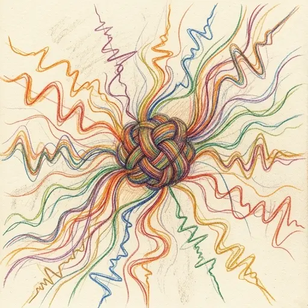
Concurrent group interview system #360
A multi-speaker conversational system that untangles simultaneous dialogue in group interviews, realigning team consensus and friction in real time.
M · m5 c5 · CS, GenAI, NLP, UI/UX
group interview where everyone is talking simultaneously and AI is cloning each other's voice as well as aligning their ideas. In the end, N 1:1 interview becomes 1 N:N interview. Consensus and conflicts are detected and tracked.
Good for: team interview, group dynamics simulation
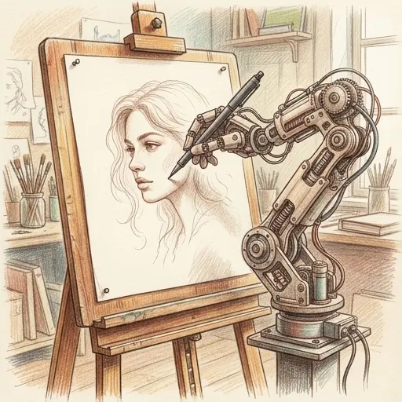
The Artist is Present #361
An interactive performance art installation featuring a mechanical pen plotter that draws live, intimate physical portraits of sitting spectators.
M · m1 c4 · Art, CV, Fab, GenAI
Use a pen plotter to draw a portrait for the audience
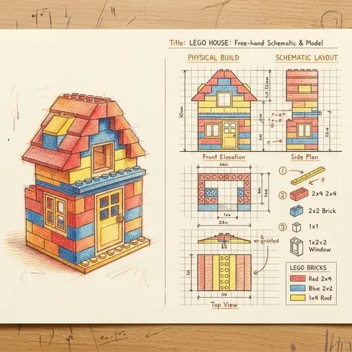
LEGO Brick to Anything #364
A tangible computing tool that scans physical LEGO configurations to instantaneously synthesize interactive software, musical scores, and architectural models.
M · m4 c2 · Art, CV, Fab, GenAI
Related #193
Use Computer Vision + LEGO as input.
Output:
- Programs
- Music
- Poetry
- Image
- Architecture
Prototypes:
Perspective mapping:
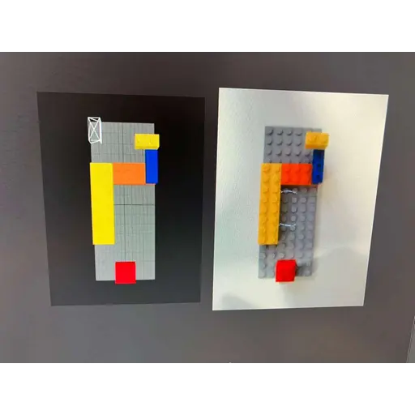
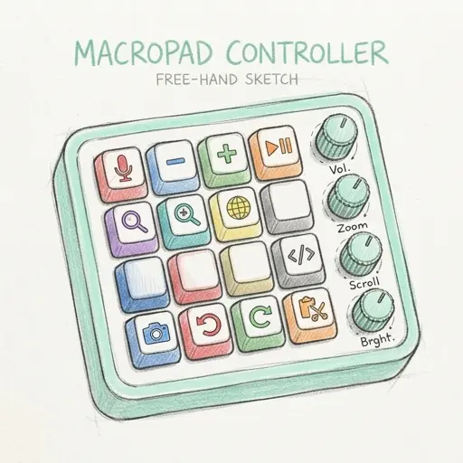
A-Frame (An Open Agent Interface) #368
An open-hardware, low-cost physical macro controller and voice console built specifically for orchestrating multi-agent AI interactions.
M · m2 c1 · CS, EE, Fab, UI/UX
- The market is crazy. This can be produced at < $30, but is being sold at $200+
- We can design an open framework for PCB and case with hot swap switches
- However, we need to think outside just buttons and knobs.
- Microphone and speaker is minimum requirement, and push to talk
- For MAS.S60, consider multi-agent interation. See #100
- For MAS.S61, consider it as controller for drawing
- For UROPs, consider what is direct manipulation, what is agentic

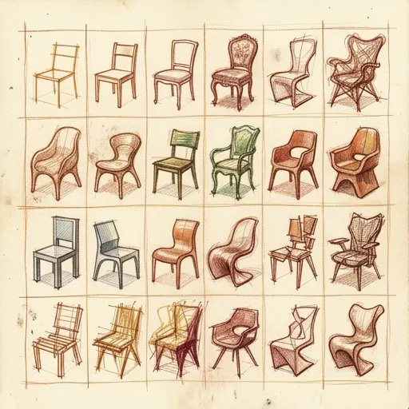
Generative Search/Design Engine #369
A visual exploration workspace that lets designers interpolate between visual references along meaningful conceptual axes instead of guessing text keywords.
M · m5 c4 · CS, GenAI, UI/UX
How can we combine search with generation for images?
- Single point: user can bind an object, and generate a 1D/2D/3D space to explore adjacent ideas
- Two point: user identify for visuals, we can establish an axis and interpolate every point to mean something
- For MAS.S60, frame as interface agents + direct manipulation hybrid
- For MAS.S61, frame as a drawing tool
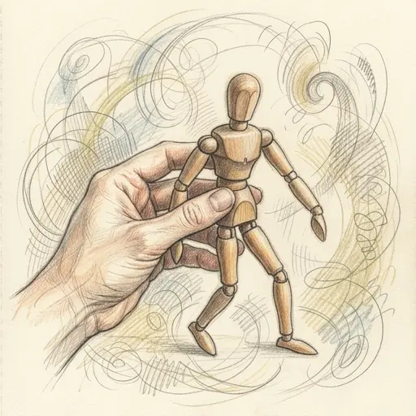
Agent Behavioral Conditioning #370
A behavioral conditioning framework that turns repeated physical user demonstrations into autonomous, reusable code routines for AI agents.
M · m5 c5 · Art, CS, CV, GenAI, NLP
A programmable agent that can be directly manipulated by the user
It will then build habits based on direction manipulation.
Formal research: #58
It uses classical conditioning theory
- Direct manipulation must be pairs of (input) => (output) mappings.
- AI generalized the mapping to behaviors (stored as code)
- AI pattern matches new input to invoke known behaviors
Innovation
- Formal representation of behavior as code (related to #347)
- A framework to enumerate the types of input => output mapping that this technique applies to
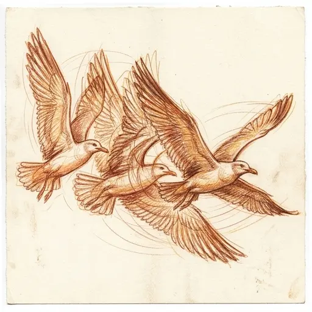
Gull in Flight camera #372
A motion camera system that collapses continuous real-world movement across time into a single, breathtaking sculptural photograph.
M · m1 c5 · Art, CS, CV, EE, Fab
Inspired by #119 sculpture. Can we invent a camera that captures motion in still frame?
User aims at an evolving event, capture a video, then the system produces a trace of the subject.
Requires advanced computer vision and photogrammetry techniques.
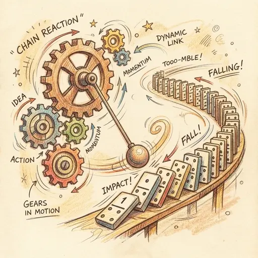
Causal-Relational Drawing #373
An interactive simulation canvas where sketched characters and elements physically interact and trigger chain reactions in the next frame.
M · m3 c5 · Art, CV, GenAI, UI/UX
User select objects and entities on a canvas, simulate their interaction to create the next frame.
- Evolution of #186
- With auto inference mode, changing on object may require other parts of the canvas to update. As observed in #186
- For MAS.S60, frame as interface agents (plural)
- For MAS.S61, frame as novel drawing tool (draw by simulation)
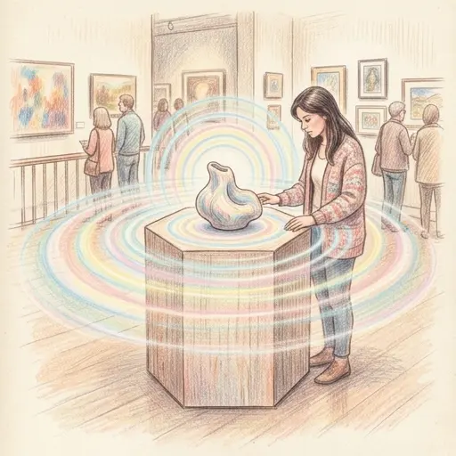
Synesthesia #374
A multisensory media installation that cross-wires human senses by rendering touch, sound, and visual rhythms through one another.
S · m2 c4 · Art, CV, UI/UX
Members week art installation
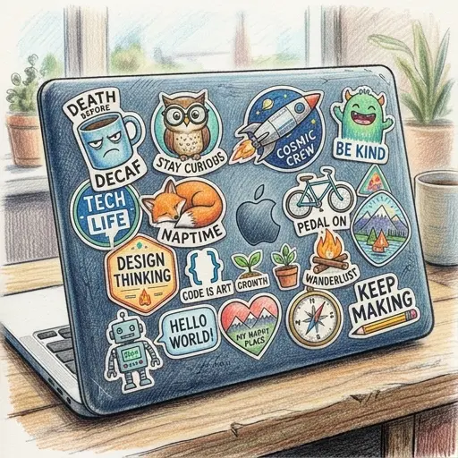
StickerNet #375
A cultural taxonomy and visual query system analyzing how laptop stickers express individual identity and community belonging.
M · m1 c5 · Art, CV, UI/UX
A formal study of laptop stickers
- Understand identify, personality, and creative expression
- Latent space visualization
- Interactive indexing and query system
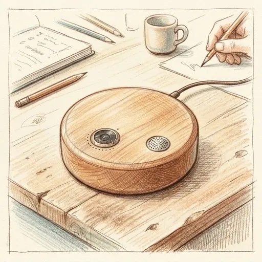
Context pucks #376
Compact sensor pucks with cameras and microphones that give desktop AI agents environmental awareness of your physical room.
M · m5 c4 · CS, CV, EE, Fab, GenAI, NLP, UI/UX
Use speaker phone and camera to acquire real-world context for human-agent interactions
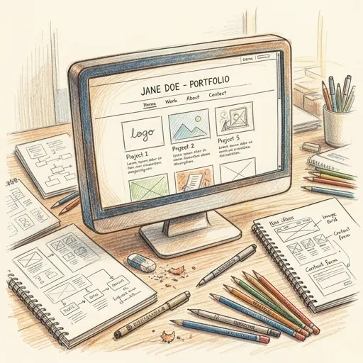
UROP team website #377
A living, markdown-driven research hub showcasing lab member profiles, ongoing design experiments, and open-source project documentation.
S · m4 c4 · GenAI, UI/UX, Team
- Intro
- Member profile
- Blog
- Markdown as source of truth
- Project
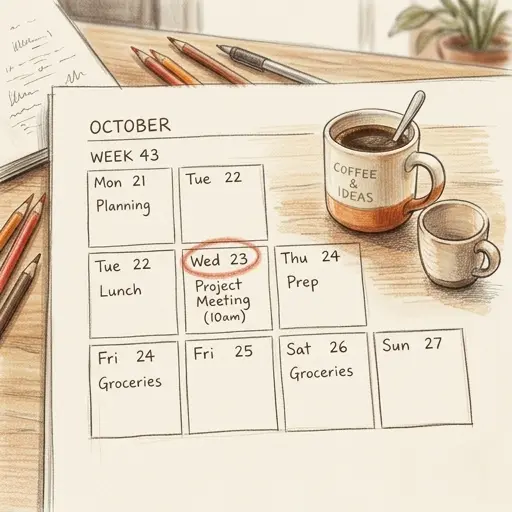
Schedule weekly meetup #378
A group synchronization framework establishing an engaging weekly lab rhythm for collaborative brainstorming and peer feedback.
S · m5 c1 · Team
Find an overlapping time for 1 hour weekly group meetup
- Preferable with buffer time after, for breakout discussions
- Location is Idea Garden, TMG, with backup meetup in the Media Lab building
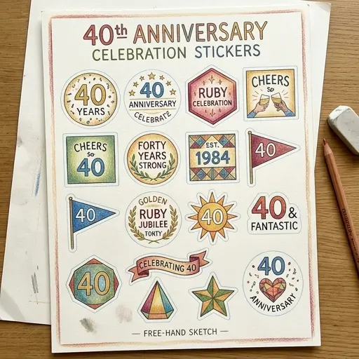
TMG sticker design ML 40+ event #379
A commemorative generative sticker sheet blending computational design and history to celebrate the MIT Media Lab's 40th anniversary.
S · m3 c5 · Art, GenAI, Team
Use GenAI and Computational design method to design a stickersheet for Media Lab 40th anniversary. Your sticker will travel to the laptops of ML legends.
Consider a warm up exercise to #375
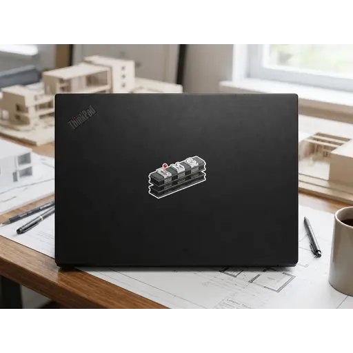
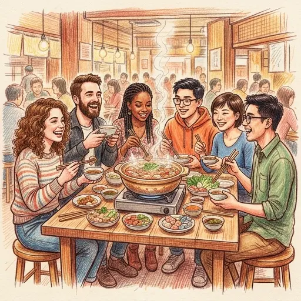
Team bonding activity #380
A shared outdoor and culinary excursion designed to build meaningful relationships and creative chemistry across our research cohort.
S · m4 c3 · Team
Plan and organize a half day or one day event to celebrate the beginning of our journey.
Example ideas, from short to long:
- Getting hotpot
- Group sailing on Charles
- Boda Borg
- Foliage hike in NH/VT
And your ideas...
Please prioritize creating meaningful shared experience and an opportunity to know each other. By this logic, we should not go to a movie because we can't talk to each other during the activity.
Budget $40 per person. I will cover the cost personally. Need to discuss if the team becomes >6 people
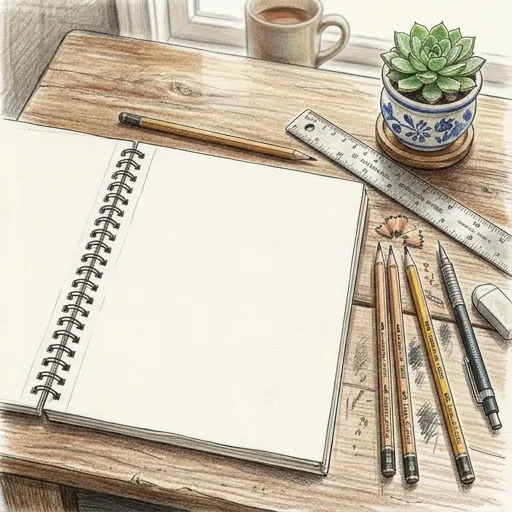
GitHub org setup #383
A streamlined open-source organization architecture and workflow pipeline supporting transparent collaboration across all lab repositories.
S · m99 c99 · Team
- investigate github org constraints. Can we get private repos? Limit on collaborators?
- Set up org level project, migrate ideas
- Next step, connect to #377, re-generate website when content changes
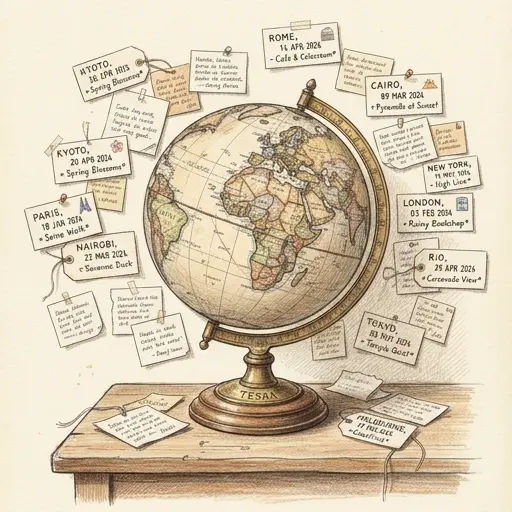
Now Now Now #384
A global cartography project archiving what creative makers worldwide are currently focused on right now, fostering shared presence across distances.
S · m2 c4 · Art, CS, GenAI, UI/UX
Based on Connie's personal website: https://conniehuang.dev/now and the movement behind it: https://nownownow.com/about
Consider it a TeleAbsence (#35) project, how preserving a present moment is a form a communication (storage = communication over time)
Also related to #375. Identify how people use a shared practice to deepen their sense of belonging.
For this project, we can visualize a global map of "now"s. It is a crawler, indexer, and visualizer.
We need good story telling and UI/UX. Presenting the data itself isn't enough.
Papershop #385
A physical tabletop image editor combining physical paper layers and markers with digital compositing power to celebrate hand-drawn craftsmanship.
M · m5 c4 · Art, CS, CV, GenAI, UI/UX
Continuation from #186 (Dream Brush)
- Photoshop multi-layered image editor and drawing system
- Use real paper and markers
- Allow people to move and rearrange paper on the table
- Allow non-flat objects to be added to the scene
- It is more productive and intuitive than digital UI
- Also celebrates artists hand drawing skills, allow them to use their real pens
SandGPT #387
An augmented reality sandbox marrying physical landscape sculpting with generative vision-language models for intuitive 3D urban planning.
M · m5 c5 · Art, CS, CV, GenAI, NLP
Leverage existing Tangible Media Group Sandscape project. User manipulate the sand as the existing project allows. In addition, use computer vision system to track their fingers and what they are pointing at. The AI will fit the 3D model with generated image and project back onto the plastic beads (sand).
Use can invoke "Put that there" #366 type of command to ask AI to move virtual objects.
This system can be used for
- Amusement park building
- 3D sculpting
- Urban planning
- A new type of drawing tool
Technical challenges
- Infra red sensing. Kinect resolution might be too low
- Projection mapping. Top down projection should work if we have stable rig
- Hand occlusion. We should use computer vision to remove hand from the visual feed
- Generative rendering: need fast models and can be grounded with geometry
Shout out to Disha for shaping this idea
Thought Editor #393
A speculative cognition interface that visualizes internal reasoning as a dynamic causal web, allowing you to directly tune, rewrite, and pin down evolving thoughts in real time.
M · m99 c99 · Art, GenAI, NLP, UI/UX
Build on the idea of direct semantic manipulation. What would a speculative software interface look like for a "Thought Editor"?
- How to represent thoughts? Causal graph? Unstable images (#283)?
- How to represent edit? Tuning? Rewriting? Inject evidence?